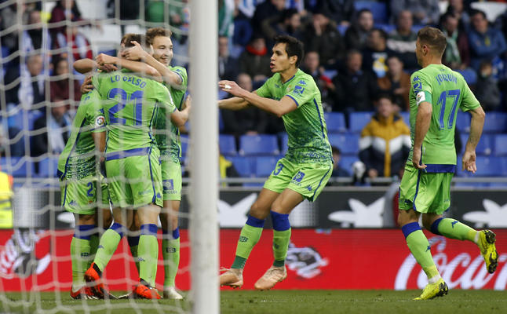
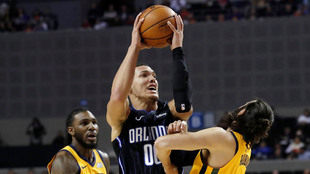
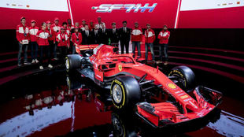
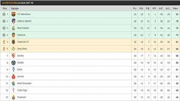
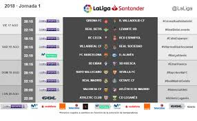

Espanyol-Betis (1-3): Una escalada que ya lo coloca en Europa
Tercera victoria seguida de los verdiblancos, con goles de Lo Celso, Tello y Duarte, en propia puerta.
Orlando revive en el último cuarto para vencer a Utah
México le sienta bien al Orlando Magic, que por segundo partido se vio abajo en el último cuarto y por segunda ocasión salió avante, venciendo 96-89 al Utah Jazz para contar como victorias sus dos partidos de local en la Arena Ciudad de México.
El Ferrari de 2019 se presenta el 15 de febrero.
Tras anunciar hace unos días que el monoplaza de 2019 está casi listo, Ferrari es el primer equipo en anunciar la fecha de su presentación para la próxima campaña. Será el 15 de febrero, sólo tres días antes de que ruede por primera vez en el Circuit de Barcelona, el lugar que acogerá de nuevo la pretemporada de F1 de forma íntegra.

